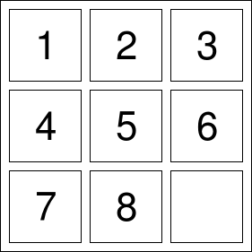

Implementation of path planning algorithms on normal and differential constraints using turtle bot
{{ site.version }} Github Link8-Puzzle-Solver
This project uses BFS algorithm to calculate all possible configurations space till it reaches goal state. This project is impelemented using queue and matrices as the data structures. It also has two approaches which is time complexity and space complexity.Provide your own custom input and try out the algorithm.
{{ site.version }} Github Link

Frontier Exploration with Turtle Bot
{{ site.version }} Github LinkRoadmap Based Robot Motion Planning in Dynamic Environments
{{ site.version }} Github Link
Impelementation of Dikstra and A* algorithm on a static environment
{{ site.version }} Github LinkOptimal Controls
Projects in this section are on different controls and filters.
Design and Simulation of LQR (Linear Quadratic Regulator) Controller for a gantry crane
{{ site.version }} Github Link
Robot Modelling
Projects in this section are design of robot with its Inverse and forward kinamatics.
Modelling of fruit picking robot
{{ site.version }} Github LinkComputer Vision
Projects in this section are mostly on machine learning and Image Processing.
Design of Algorithm for Lane Detection and Turn Prediction used in Self Driving Cars
{{ site.version }} Github Link

Color segmentation using Gaussian Mixture Models and Expectation Maximization Techniques
{{ site.version }} Github LinkImplementation of Traffic Sign Detection and Classification using MSER and SVM Model
{{ site.version }} Github Link
Detection and Tracking of AR Tags using Homography and Pose Estimation
{{ site.version }} Github LinkObject Tracking using Lucas Kanade
{{ site.version }} Github Link